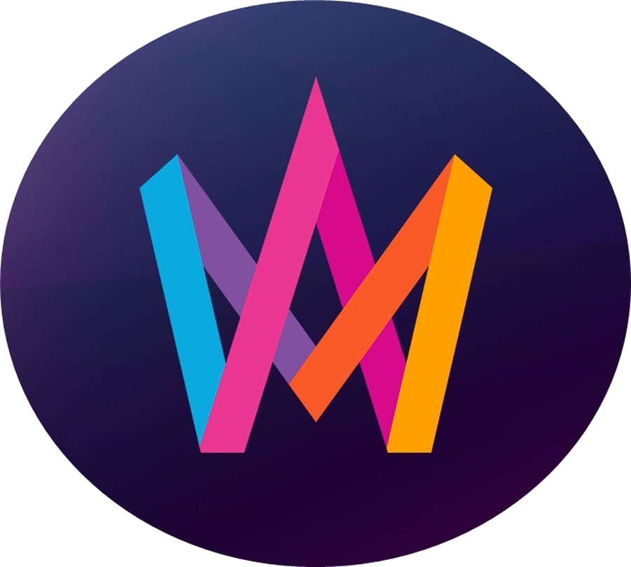

Bara för att vi inte kan ses som vanligt och fira betyder det inte att vi inte kan ha nåt party alls! Här har vi samlat allt som behövs till det perfekta mellopartyt: Ett roligt melloquiz (som kommer streamas på Twitch), massor av tårtrecept och tips på hur man dekorerar dem, den obligatoriska drinklistan, och naturligtvis massor av glitter!!
Lis Melloparty!!!
